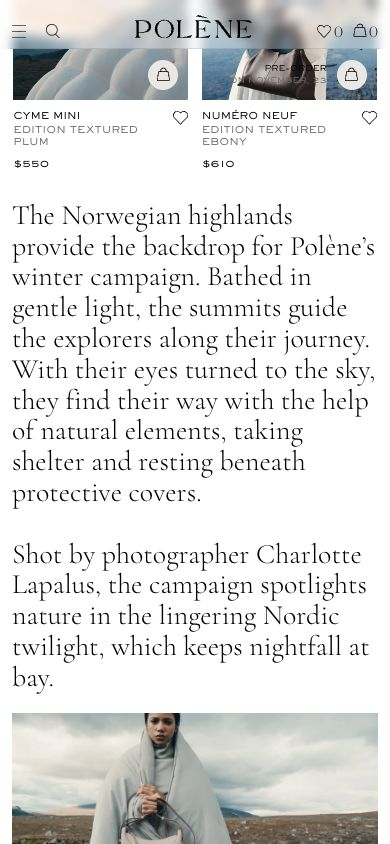
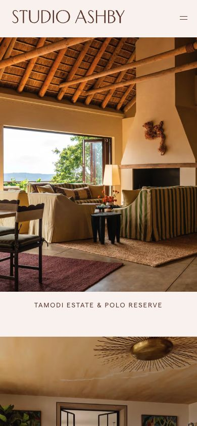
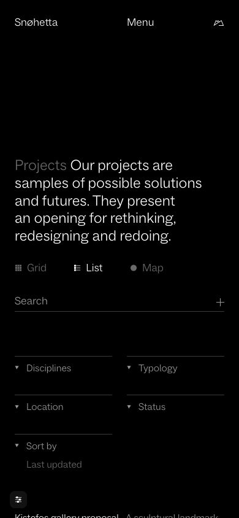
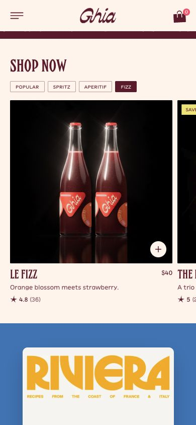
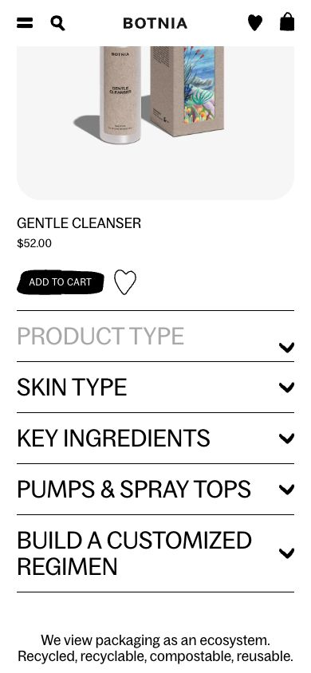

Mobile reference research
21 October 2026 · browser viewport 390 × 844 CSS pixels. Five category references were inspected at phone width. These are responsive-browser observations, not physical iOS/Android tests. Proposed WDA behaviors are distinguished below.
Polène — mobile homepage
Open live reference
Observed: At 390 × 844, the header uses a compact menu and persistent brand/cart controls. Product cards form two columns with names and prices beneath; a large serif editorial passage follows. The cookie notice was dismissed. This is a viewport-width inspection, not a physical-device test.

Applied to WDA: Retain visible product labels, a compact header and generous story typography. Avela gives its signature Arc more prominence, then uses two secondary products.
Studio Ashby — mobile projects
Open live reference
Observed: At 390 × 844, projects form one vertical sequence of large photographs with persistent captions below. The header shows the wordmark and menu icon. Activating Tamodi Estate opened its case-study page; the case-study content was inspected.

Applied to WDA: Room & Ritual keeps project names outside images and opens each home with one tap. Large photographs carry the narrative; a third project can remain a text link.
Snøhetta — mobile project index
Open live reference
Observed: At 390 × 844, the project introduction wraps above Grid / List / Map controls, search and two-column filter disclosures. List remained selected. Activating Filter projects updated the results and added a result count and Reset filter link. This was not an audit of every filter option.

Applied to WDA: Oriel retains explicit All / Culture / Living controls above its project content. The proposed three-filter interface is simpler than the reference; selection is visible and stored in the URL.
Ghia — mobile product categories
Open live reference
Observed: At 390 × 844, a portrait hero is followed by category tabs and a large product tile with a sliver of the next tile visible. Activating Fizz selected it and displayed Le Fizz products. No cart or checkout action was performed.

Applied to WDA: Sundrop uses clear selected controls and generous product imagery. Its pack chooser remains a vertical radio group, and it retains 8% ALC/VOL; Ghia’s nonalcoholic product claims are not transferred.
Botnia — mobile skincare homepage
Open live reference
Observed: At 390 × 844, product imagery and its name, price and action appear above full-width category rows with chevrons and separators. A newsletter overlay was dismissed. The capture verifies the row composition; no category result transition is claimed.

Applied to WDA: Serein keeps product information visible and uses full-width help disclosures. Its routine selector is a proposed three-button control, not a copied Botnia interaction.
Implementation sources
- W3C Reflow: plan for a 320 CSS-pixel viewport without two-dimensional scrolling for ordinary content.
- W3C Target Size Minimum: WCAG 2.2 AA uses 24px or qualifying spacing/exceptions. Our 44px control target is a more generous project choice, not a claim about the AA minimum.
Limits
No source-site code was copied. Images are research captures; generated concepts use the five WDA desktop images as their art-direction references. No newsletter, inquiry, purchase or checkout was submitted. No mobile hover behavior is claimed.